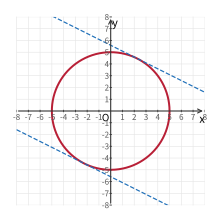
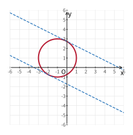
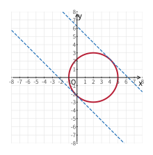

ホーム ＞ 数学C ＞ 媒介変数表示・極座標
別冊練習問題 2 の解答 円上の点の1次式の最大・最小
(1) 点 \(P(x,y)\) が円 \((x-\left(0\right))^2+(y-\left(0\right))^2=25\) 上を動くとき、\(x+2y\) の最大値と最小値を求めよ。
円を媒介変数で表す
円 \((x-\left(0\right))^2+(y-\left(0\right))^2=25\) 上の点は
\[x=0+5\cos\theta,\quad y=0+5\sin\theta\]1次式を \(\theta\) で表す
\[x+2y=0+5\cos\theta+2\left(0+5\sin\theta\right)\]三角関数の合成
\[x+2y=0+5\left(\cos\theta+2\sin\theta\right)=0+5 \sqrt{5}\sin(\theta+\alpha)\]\(\sqrt{1+2^2}=\sqrt{5}\) を使った。
最大・最小
\(-1\leqq\sin(\theta+\alpha)\leqq1\) より
\[\text{最大値 }5 \sqrt{5},\qquad \text{最小値 }- 5 \sqrt{5}\]
【答案】
\[\text{最大 }5 \sqrt{5},\ \text{最小 }- 5 \sqrt{5}\]答
(2) 点 \(P(x,y)\) が円 \((x-\left(-1\right))^2+(y-\left(1\right))^2=4\) 上を動くとき、\(x+2y\) の最大値と最小値を求めよ。
円を媒介変数で表す
円 \((x-\left(-1\right))^2+(y-\left(1\right))^2=4\) 上の点は
\[x=-1+2\cos\theta,\quad y=1+2\sin\theta\]1次式を \(\theta\) で表す
\[x+2y=-1+2\cos\theta+2\left(1+2\sin\theta\right)\]三角関数の合成
\[x+2y=1+2\left(\cos\theta+2\sin\theta\right)=1+2 \sqrt{5}\sin(\theta+\alpha)\]\(\sqrt{1+2^2}=\sqrt{5}\) を使った。
最大・最小
\(-1\leqq\sin(\theta+\alpha)\leqq1\) より
\[\text{最大値 }1 + 2 \sqrt{5},\qquad \text{最小値 }- 2 \sqrt{5} + 1\]
【答案】
\[\text{最大 }1 + 2 \sqrt{5},\ \text{最小 }- 2 \sqrt{5} + 1\]答
(3) 点 \(P(x,y)\) が円 \((x-\left(2\right))^2+(y-\left(0\right))^2=9\) 上を動くとき、\(x+y\) の最大値と最小値を求めよ。
円を媒介変数で表す
円 \((x-\left(2\right))^2+(y-\left(0\right))^2=9\) 上の点は
\[x=2+3\cos\theta,\quad y=0+3\sin\theta\]1次式を \(\theta\) で表す
\[x+y=2+3\cos\theta+0+3\sin\theta\]三角関数の合成
\[x+y=2+3\left(\cos\theta+\sin\theta\right)=2+3 \sqrt{2}\sin(\theta+\alpha)\]\(\sqrt{1+1^2}=\sqrt{2}\) を使った。
最大・最小
\(-1\leqq\sin(\theta+\alpha)\leqq1\) より
\[\text{最大値 }2 + 3 \sqrt{2},\qquad \text{最小値 }- 3 \sqrt{2} + 2\]
【答案】
\[\text{最大 }2 + 3 \sqrt{2},\ \text{最小 }- 3 \sqrt{2} + 2\]答